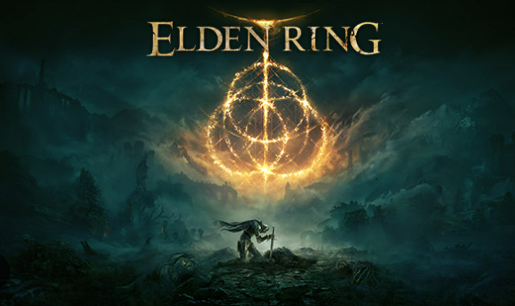
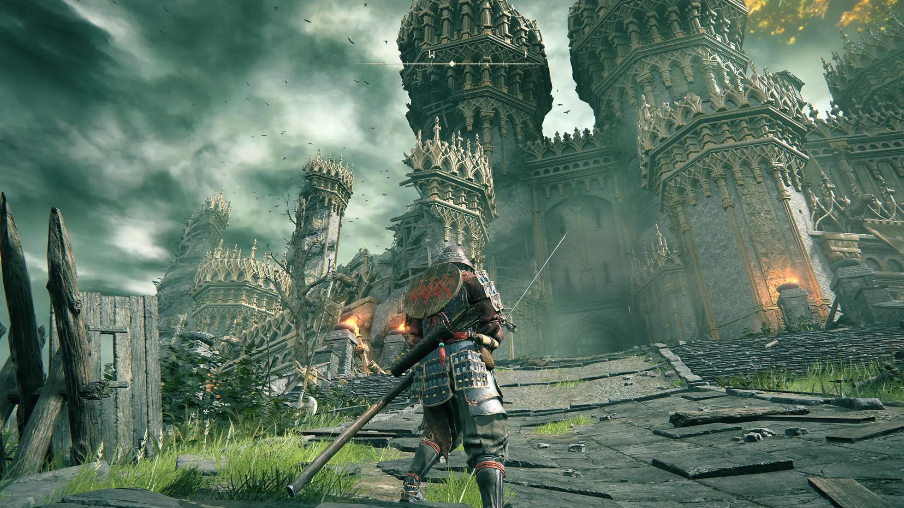

RPG de Ação




Final Fantasy XVI é um RPG de ação ambientado no mundo sombrio e fantástico de Valisthea, dividido por reinos que disputam o poder dos Cristais-Máter. O jogador assume o papel de Clive Rosfield, um guerreiro em busca de vingança e justiça após eventos trágicos envolvendo seu irmão e o misterioso Eikon Ifrit. O jogo se destaca por seu combate em tempo real dinâmico, narrativa madura e cinematográfica, além de explorar temas como guerra, destino e poder. É uma das entradas mais intensas e sombrias da franquia.